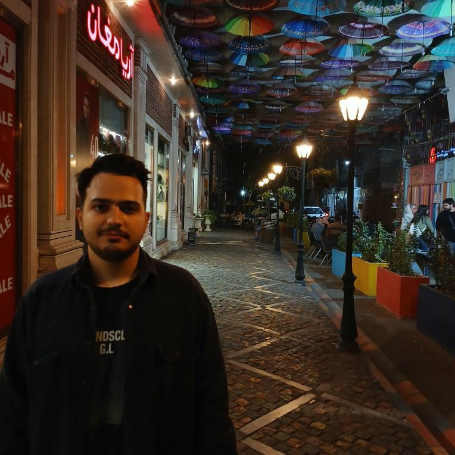

کنجکاو، در حال یادگیری، در حال ساختنسلام، من علیرضام.
سلام، من علیرضام.
هنوز در حال
کشف کردن خودم!
از دنیای رستوران تا دنیای کد؛ اینجا تکههایی از مسیر من، چیزهایی که میسازم و سؤالهایی که دوست دارم کشف کنم را میبینی.
✳مسیرهای متفاوت، یک ذهن کنجکاو.
A LITTLE CODE. A LOT OF CURIOSITY.✦ همیشه در حال کشفعلیرضایک آدم، چند دنیای متفاوت↗✳

✳عاینجا جای عکس من است
آشنایی از همینجا شروع میشود
روی سؤالها کلیک کن ↙پشت این صفحه، یک آدمه.
01 / درباره منمن کیام؟ +
به من گفتن علیرضا ولی خودمم هنوز قطعی نمیدونم کیام! چون قطعیتی نیست. هم سالندار بودم، هم کبابپز، هم مدیر رستوران، هم vibe coder، هم دانشجو و عاشق روانشناسی.
بیشتر از مسیر من ↖02 / همکاری با منچه خدماتی ارائه میشود؟ +
طراحی سایت و اپلیکیشن و گرفتن انواع تستهای روانشناسی. تا حالا سؤال نشده برات تو چه شغلی میتونی بدرخشی؟
آشنایی با خدمات ↖از فکر تا ساختنایدهای توی ذهنت داری؟
شروع یک گفتوگو ↖